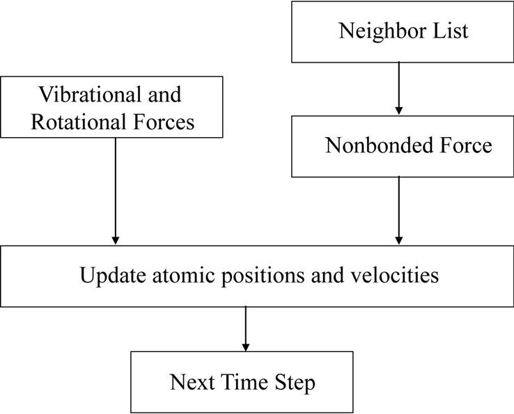

This chapter introduces the concept of computational thinking. It first reviews the main goals of parallel programming. It then discusses the thinking process of algorithm selection and problem decomposition. For a given problem the programmer will typically have to select from a variety of algorithms. Some of these algorithms achieve different tradeoffs while maintaining the same numerical accuracy. Others involve sacrificing some level of accuracy to achieve much more scalable running times. For the selected algorithm, different choices of problem decomposition can result in different levels of interference between threads, parallelism exposed, load imbalance, and other performance considerations during parallel execution. Computational thinking skills allow an algorithm designer to work around the roadblocks and reach a good solution.
Strong scaling; weak scaling; Amdahl’s law; algorithm selection; algorithmic complexity; problem decomposition; output-centric decomposition; input-centric decomposition; gather; scatter; approximation
We have so far concentrated on practical knowledge in parallel programming, which consists of CUDA programming interface features, the GPU architecture, performance optimization techniques, parallel patterns, and application case studies. In this chapter we switch our discussions to concepts that are more abstract. We generalize parallel programming into a computational thinking process of designing or selecting parallel algorithms and decomposing a domain problem into well-defined and coordinated work units that can each be efficiently performed by the selected algorithms. A programmer with strong computational thinking skills not only analyzes but also transforms the structure of a domain problem: which parts are inherently serial, which parts are amenable to high-performance parallel execution, and the domain-specific tradeoffs that are involved in moving parts from the former category to the latter. With good algorithm selection and problem decomposition the programmer can achieve an appropriate compromise between parallelism, work efficiency, and resource consumption. A strong combination of domain knowledge and computational thinking skills is often needed for creating successful computational solutions to challenging domain problems. This chapter will give the reader more insight into parallel programming and computational thinking in general.
Before we discuss the fundamental concepts of parallel programming, it is important for us to first review the three main reasons why people pursue parallel computing. The first goal is to solve a given problem in less time. For example, an investment firm may need to run a financial portfolio scenario risk analysis package on all its portfolios during after-trading hours. Such an analysis could require 200 hours on a sequential computer. However, the portfolio management process may require that analysis be completed in 4 hours to be in time for major decisions based on the resulting information. Using parallel computing may speed up the analysis and allow it to complete within the required time window.
The second goal of using parallel computing is to solve bigger problems within a given amount of time. In our financial portfolio analysis example the investment firm may be able to run the portfolio scenario risk analysis on its current portfolio within a given time window using sequential computing. However, the firm is planning on expanding the number of holdings in its portfolio. The enlarged problem size would cause the sequential analysis to exceed the allowed time window. Parallel computing that reduces the running time of the bigger problem size can help to accommodate the planned expansion to the portfolio.
The third goal of using parallel computing is to achieve better solutions for a given problem and a given amount of time. The investment firm may have been using an approximate model in its portfolio scenario risk analysis. Using a more accurate model may increase the computational complexity and increase the running time on a sequential computer beyond the allowed window. For example, a more accurate model may require consideration of interactions between more types of risk factors using a more numerically complex formula. Parallel computing that reduces the running time of the more accurate model may complete the analysis within the allowed time window.
In practice, parallel computing may be driven by a combination of these three goals.
It should be clear from our discussion that parallel computing is motivated primarily by increased speed. The first goal is achieved by increased speed in running the existing model on the current problem size. The second goal is achieved by increased speed in running the existing model on a larger problem size. The third goal is achieved by increased speed in running a more complex model on the current problem size. Obviously, the increased speed through parallel computing can be used to achieve a combination of these goals. For example, parallel computing can reduce the runtime of a more complex model on a larger problem size.
It should also be clear from our discussion that applications that are good candidates for parallel computing typically involve large problem sizes and high complexity. That is, these applications process a large amount of data, require much computation in each iteration, and/or perform many iterations on the data. Applications that do not involve large problem sizes or incur high modeling complexity tend to complete within a small amount of time and do not offer much motivation for increased speed.
A real application often consists of multiple modules that work together. Fig. 19.1 shows an overview of the major modules of a molecular dynamics application. For each atom in the system the application needs to calculate the various forms of forces, such as vibrational, rotational, and nonbonded, that are exerted on the atom. Each form of force is calculated with a different method. At the high level, a programmer needs to decide how the work is organized. Note that the amount of work can vary dramatically between these modules. The nonbonded force calculation typically involves interactions among many atoms and incurs many more calculations than the vibrational and rotational forces. Therefore these modules tend to be realized as separate passes over the force data structure.

The programmer needs to decide whether each pass is worth implementing in a CUDA device. For example, the programmer may decide that the vibrational and rotational force calculations do not involve sufficient amount of work to warrant execution on a GPU device. Such a decision would lead to a CUDA program that launches a kernel that calculates nonbonding force fields for all the grid points while continuing to calculate the vibrational and rotational forces for the grid points on the host. The module that updates atom positions and velocities may also run on the host. It first combines the vibrational and rotational forces from the host and the nonbonding forces from the device. It then uses the combined forces to calculate the new atomic positions and velocities.
The portion of work done by the device will ultimately decide the application-level speedup that is achieved by parallelization. For example, assume that the nonbonding force calculation accounts for 95% of the original sequential execution time and it is accelerated by 100× using a GPU. Further assume that the rest of the application remains on the host and receives no speedup. The application-level speedup is 1/(5%+95%/100)=1/(5%+0.95%)=1/(5.95%)=17×. In the case in which the execution of the host and the CUDA device can be overlapped, the execution time of the parallel section is completely hidden in the host execution time. The application-level speedup would be 1/(5%)=20×. This is a demonstration of Amdahl’s law: The application speedup due to parallel computing is limited by the sequential portion of the application. In this case, even though the sequential portion of the application is quite small (5%), it limits the application-level speedup to 20× despite the nonbonding force calculation having a speedup of 100× and being completely hidden in the shadow of the host execution of the sequential portion. This example illustrates a major challenge in accelerating large applications: The accumulated execution time of small activities that are not worth parallel execution on a CUDA device can become a limiting factor in the speedup that is seen by the end users. We saw this phenomenon in the iterative MRI application study in Chapter 17, Iterative Magnetic Resonance Imaging Reconstruction, in which the CG computation becomes a limiting factor of speedup even though it accounts for only about 1% of the execution time of the original application.
Amdahl’s law often motivates task-level parallelization. Although some of these smaller activities do not warrant fine-grained massive parallel execution, it may be desirable to execute some of these activities in parallel with each other when the dataset is large enough. This could be achieved by using a multicore host to execute such tasks in parallel. Alternatively, we could try to simultaneously execute multiple small kernels, each corresponding to one task. CUDA devices support task parallelism with streams, which will be discussed in Chapter 20, Programming a Heterogeneous Computing Cluster.
An alternative approach to reducing the effect of sequential tasks is to exploit data parallelism in a hierarchical manner. For example, in a Message Passing Interface (MPI, 2009) implementation a molecular dynamics application would typically distribute large chunks of the spatial grids and their associated atoms to nodes of a networked computing cluster. By using the host of each node to calculate the vibrational and rotational force for its chunk of atoms, we can take advantage of multiple host CPUs and achieve speedup for these lesser modules. Each node can use a CUDA device to calculate the nonbonding force at a higher level of speedup. The nodes will need to exchange data to accommodate forces that go across chunks and atoms that move across chunk boundaries. We will discuss more details of joint MPI-CUDA programming in Chapter 20, Programming a Heterogeneous Computing Cluster. The main point here is that MPI and CUDA can be used in a complementary, hierarchical way in applications to jointly achieve a higher level of speed with large datasets.
The process of parallel programming can typically be divided into three steps: algorithm selection, problem decomposition, and performance optimization and tuning. The last step was the focus of previous chapters and received general treatment in Chapter 6, Performance Considerations. In the next two sections of this chapter we will discuss the first two steps with generality as well as depth.
An algorithm is a step-by-step procedure in which each step is precisely stated and can be carried out by a computer. An algorithm must exhibit three essential properties: definiteness, effective computability, and finiteness. Definiteness refers to the notion that each step is precisely stated; there is no room for ambiguity as to what is to be done. Effective computability refers to the fact that each step can be carried out by a computer. Finiteness means that the algorithm must be guaranteed to terminate.
Given a problem, one can typically come up with multiple algorithms to solve the problem. Some require fewer steps of computation than others (i.e., have lower algorithmic complexity), some expose a higher degree of parallel execution than others, some are more generally applicable than others, and some have better accuracy or numerical stability than others. Unfortunately, there is often not a single algorithm that is better than others in all these aspects. A parallel programmer often needs to select an algorithm that achieves the best compromise for a given hardware system.
We have seen examples of assessing the tradeoffs between different algorithms for a computation in several chapters throughout this book. For the prefix sum computation in Chapter 11, Prefix Sum (Scan), we compared two different algorithms for performing parallel prefix sum, namely, the Kogge-Stone algorithm and the Brent-Kung algorithm. Our analysis showed that the Brent-Kung algorithm has lower algorithmic complexity. It requires fewer operations to perform the same computation, which makes it more work efficient. However, we also showed that the Kogge-Stone algorithm exposes more parallelism than the Brent-Kung algorithm, allowing it to complete in fewer iterations. This tradeoff between algorithmic complexity and the amount of parallelism exposed by an algorithm is a classic tradeoff that is encountered by parallel programmers. The best algorithm usually depends on the characteristics of the parallel hardware being targeted as well as the extent to which the higher complexity of an algorithm can be mitigated with hybrid approaches that combine two parallel algorithms or combine a parallel algorithm with a lower-complexity sequential algorithm via thread coarsening.
For the sorting pattern in Chapter 13, Sorting, we compared two different algorithms for performing parallel sorting, namely, radix sort and merge sort. Radix sort can achieve lower algorithmic complexity than merge sort because it is a noncomparison sorting algorithm. It is also highly amenable to parallelization. However, radix sort is not generally applicable because it can be used only with certain types of keys. Merge sort, which is a comparison-based sort, is more generally applicable and can be used with any type of key that has a well-defined comparison operator. The tradeoff between generality and parallel execution efficiency is yet another tradeoff that parallel programmers encounter when selecting a parallel algorithm.
For the electrostatic potential map computation in Chapter 18, Electrostatic Potential Map, we compared two different algorithms for performing the computation, namely, direct Coulomb summation (DCS) and cutoff summation (Rodrigues et al., 2008). These two approaches expose the same amount of parallelism and have the same level of generality; however, they present the classic tradeoff between algorithmic complexity and accuracy. In Chapter 18, Electrostatic Potential Map, we showed that the cutoff summation algorithm can significantly improve the execution efficiency of grid computation by sacrificing a small amount of accuracy. The challenge that is addressed by this technique is that the amount of computation performed by fully accurate methods such as DCS increases with the square of the volume. For large volume systems, such increase makes the computation excessively long even for massively parallel devices. The cutoff summation method is based on the observation that many grid calculation problems are based on physical laws in which numerical contributions from particles or samples that are far away from a grid point are tiny and can be collectively treated with an implicit method at much lower algorithmic complexity. Although this tradeoff between algorithmic complexity and accuracy is not unique to parallel programming and is also encountered with sequential implementations, it may present additional challenges to parallel programmers. We show an example of these additional challenges for the cutoff summation algorithm in the rest of this section.
In sequential computing, a simple cutoff algorithm handles one atom at a time. For each atom the algorithm iterates through the grid points that fall within a radius of the atom’s coordinate. This is a straightforward procedure, since the grid points are in an array that can be easily indexed as a function of their coordinates. However, this simple procedure does not carry easily to parallel execution. The reason is that the atom-centric decomposition does not work well, owing to its scatter memory access behavior. Therefore we need to use a cutoff binning algorithm based on the grid-centric decomposition: Each thread calculates the energy value at one grid point. The key idea of the algorithm is to first sort the input atoms into bins according to their coordinates. Each bin corresponds to a box in the grid space and contains all atoms whose coordinate falls into the box. We define a “neighborhood” of bins for a grid point to be the collection of bins that contain all the atoms that can contribute to the energy value of a grid point. We described an efficient way of managing neighborhood bins for all grid points in Chapter 18, Electrostatic Potential Map. In this algorithm, all blocks iterate through their own neighborhood bins, while all threads in a block scan through the atoms in these neighborhood bins together but make individual decisions on whether each atom falls within its cutoff radius.
One subtle issue with binning is that bins may end up with different numbers of atoms. Some bins may have many atoms, and some bins may have no atom at all. A well-known solution is to set the bin size at a reasonable level, typically much smaller than the largest possible number of atoms in a bin. The binning process maintains an overflow list. When atoms are sorted into bins, if an atom’s home bin is full, the atom is added to the overflow list instead. After the device has completed executing a cutoff summation kernel for calculating an electrostatic potential map, atoms in the overflow list need to be processed to complete the missing contributions.
Fig. 19.2 shows a comparison of scalability and performance of the various electrostatic potential map algorithms and implementations. Note that the CPU-SSE3 curve is based on a sequential cutoff summation algorithm. For a map with small volumes, around 1000 Å3, the host (CPU with SSE) executes faster than the DCS kernel, as shown in Fig. 19.2. This is because there is not enough work to fully utilize a CUDA device for such a small volume. However, for moderate volumes, between 2000 and 500,000 Å3, the direct summation kernel performs significantly better than the host, owing to its massive parallelism. However, as we anticipated, the direct summation kernel scales poorly when the volume size reaches about 1,000,000 Å3 and runs longer than the sequential algorithm on the CPU! This is because the algorithmic complexity of the DCS kernel is higher than the sequential cutoff algorithm and thus the amount of work done by kernel grows much faster than that done by the sequential algorithm. For volume sizes larger than 1,000,000 Å3 the amount of work is so large that it swamps the hardware execution resources.
Fig. 19.2 also shows the running time of three binning-based implementations of the cutoff summation algorithm. The SmallBin implementation corresponds to the neighborhood bin list approach discussed in Chapter 18, Electrostatic Potential Map, and allows the blocks running the same kernel to process different neighborhoods of atoms. The SmallBin implementation does incur more instruction overhead for loading atoms from global memory into shared memory. For a moderate volume there is a limited number of atoms in the entire system. The ability to examine a smaller number of atoms does not provide sufficient advantage to overcome the additional instruction overhead. The SmallBin-Overlap implementation overlaps the sequential overflow atom processing with the next kernel execution. It provides a slight but noticeable improvement in running time over the SmallBin implementation. The SmallBin-Overlap implementation achieves a 17× speedup over an efficiently implemented sequential CPU-SSE cutoff summation implementation and maintains the same scalability for large volumes.
After an appropriate algorithm has been selected, for a problem to be solved with parallel computing, the problem must be formulated in such a way that it can be decomposed into subproblems that can be safely solved at the same time. Under such formulation and decomposition the programmer writes code and organizes data to solve these subproblems concurrently. Finding parallelism in large computational problems is often conceptually simple but can be challenging in practice. The key is to identify the work to be performed by each unit of parallel execution so that the inherent parallelism of the problem is well utilized.
The two most common strategies for decomposing a problem for parallel execution are the output-centric and input-centric decompositions. As the names imply, an output-centric decomposition assigns threads to process different units of the output data in parallel, whereas an input-centric decomposition assigns threads to process different units of the input data in parallel. These decomposition strategies are illustrated in Fig. 19.3. While both decomposition strategies lead to the same execution results, they can exhibit very different performance in a given hardware system. The output-centric decomposition usually exhibits the gather memory access behavior, in which each thread gathers or collects the effect of input values into an output value. Fig. 19.3A illustrates the gather access behavior. Gather-based access patterns are usually more desirable in CUDA devices because the threads can accumulate their results in their private registers. Also, multiple threads can share input values and can effectively use constant memory caching or shared memory to conserve global memory bandwidth.
The input-centric decomposition, by contrast, usually exhibits the scatter memory access behavior, in which each thread scatters or distributes the effect of an input value into the output values. The scatter behavior is illustrated in Fig. 19.3B. Scatter-based access patterns are usually undesirable in CUDA devices because multiple threads can update the same grid point at the same time. The grid points must be stored in a memory that can be written by all the threads involved. Atomic operations must be used to prevent race conditions and loss of values during simultaneous writes to an output value by multiple threads. These atomic operations are significantly slower than the register accesses that are used in the output-centric decomposition.
However, aside from the gather versus scatter access patterns, other considerations may go into deciding whether an output-centric or input-centric decomposition (or another decomposition) is more suitable for a particular application. These considerations include the amount of parallelism that is exposed by the decomposition, the ease of identifying which input data contributes to which output data, the load balance induced by the decomposition, and others, depending on the application.
The distinction between input-centric and output-centric decompositions was most evident in Chapters 17, Iterative Magnetic Resonance Imaging Reconstruction, and 18, Electrostatic Potential Map, where the two strategies were both implemented and explicitly compared. However, problem decomposition is an implicit design decision that has been made throughout many computations discussed in this book. We revisit these computations to highlight the problem decomposition that was chosen in each case and why it is advantageous over alternative decompositions.
The image processing (Chapter 3, Multidimensional Grids and Data), matrix multiplication (Chapters 3, 5, and 6), Convolution (Chapter 7), and Stencil (Chapter 8) computations were all parallelized by using an output-centric decomposition. That is, the threads in these computations are assigned to output elements (image pixels, matrix entries, or grid points) and iterate over the input elements that contribute to them. Alternatively, an input-centric decomposition would assign threads to the input elements and have each thread iterate over the output elements to which its input element contributes and make an update using atomic operations. The clear advantage of the output-centric decomposition over the input-centric decomposition in these cases is avoiding atomics by using a gather access pattern instead of a scatter access pattern. On the other hand, none of the other considerations make the input-centric decomposition favorable. There are enough output elements to expose a high degree of parallelism, identifying which input elements are needed by each output element is straightforward, and all output elements require the same amount of work to be computed, so there is no load imbalance.
The histogram computation (Chapter 9, Parallel Histogram) was parallelized by using an input-centric decomposition. That is, each thread is assigned to an input element (or chunk of elements) and updates the output bins on the basis of the input value(s). Since multiple threads may update the same output bin, atomic operations are needed (scatter access pattern). Alternatively, an output-centric decomposition would assign threads to output bins and have each thread search for the inputs that map to the bin and update the bin accordingly. This decomposition would eliminate the atomic operations because each bin would be updated by a single thread (gather access pattern). However, the output-centric decomposition would create many other problems. First, the number of output bins is typically much smaller than the number of input values, so parallelism is substantially reduced. Second, a thread cannot know which input values map to its output bin without inspecting those input values, so each thread will need to iterate over every input value, which is not work efficient. Third, even if threads had some way of quickly identifying which input values mapped to their output bins, each bin would have a different number of input values mapping to it, which would create load imbalance across threads. All these considerations make the input-centric decomposition more favorable for the histogram computation.
The merge operation (Chapter 12, Merge) was parallelized by using an output-centric decomposition; that is, each thread is assigned to an element (or chunk of elements) in the output array and performs a binary search to find the corresponding input element(s) and merge them. While many other computations that favor the output-centric decomposition do so because of the benefit of gathering over scattering, this consideration is not relevant for the merge operation. Every output element in the merge operation is contributed to by only one input element, so an input-centric merge operation would not need to use atomics. However, an input-centric merge operation either would make it more expensive to find the mapping between the input element(s) for which a thread is responsible and the corresponding output element(s) or would incur high load imbalance by having each input thread be responsible for a different number of input elements. For this reason, the output-centric decomposition is preferred.
For sparse matrix computations (Chapter 14, Sparse Matrix Computation) the SpMV/COO kernel used input-centric decomposition, in which threads were assigned to nonzeros in the input matrix and atomically updated the corresponding element in the output vector (scatter access pattern). The remaining kernels used output-centric decomposition, in which threads were assigned to output vector elements and iterated over input nonzeros (gather access pattern). Although the input-centric SpMV/COO kernel performed atomics, it had other advantages over the output-centric kernels, such as extracting more parallelism and having better load balance. Ultimately, the best decomposition for this computation depends on the input dataset. Moreover, the hybrid ELL-COO format showcases an example in which a hybrid output-centric and input-centric decomposition may be beneficial.
For graph traversal (Chapter 15, Graph Traversal) the vertex-centric push implementation and the edge-centric implementation used input-centric decomposition. That is, threads were assigned to vertices or edges and updated the levels of neighboring vertices. In contrast, the vertex-centric pull implementation used output-centric decomposition in which each thread updated only the level of the vertex to which it was assigned. The tradeoff between scatter and gather access patterns is not a concern in selecting between different decompositions because the updates to the level values are idempotent and do not require atomics. However, the amount of parallelism that is extracted and the load balance that is achieved play an important role in deciding which decomposition is more favorable, and the best decomposition ultimately depends on the input dataset. The reader is encouraged to review Chapter 15, Graph Traversal, for a more detailed handling of this topic.
The iterative MRI reconstruction problem (Chapter 17, Iterative Magnetic Resonance Imaging Reconstruction) and the electrostatic potential calculation problem (Chapter 18, Electrostatic Potential Map) both favor the output-centric decomposition because of the benefit over the gather pattern of the scatter pattern in avoiding atomic operations. These chapters already handle the distinction between the two decomposition strategies in depth. The iterative MRI reconstruction problem (Chapter 17, Iterative Magnetic Resonance Imaging Reconstruction) processes a large amount of k-space sample data. Each k-space sample data is also used many times for calculating its contributions to the reconstructed voxel data. For high-resolution reconstruction, each sample data is used a large number of times. We showed that a good decomposition of the FhD problem in MRI reconstruction is an output-centric decomposition that forms subproblems, each of which calculates the value of an FhD element using the gather strategy.
Similarly, the electrostatic potential calculation problem (Chapter 18, Electrostatic Potential Map) involves the calculation of the contribution of many input atoms to the potential energy at a large number of output grid points. A realistic molecular system model typically involves at least hundreds of thousands of atoms and millions of energy grid points. The electrostatic charge information of each atom is used many times in calculating its contributions to the energy grid points. We showed that the decomposition of the electrostatic potential map calculation problem can be atom-centric (i.e., input-centric) or grid-centric (i.e., output-centric). In an atom-centric decomposition, each thread is responsible for calculating the effect of one atom on all grid points. In contrast, a grid-centric decomposition uses each thread to calculate the effect of all atoms on a grid point. The grid-centric (i.e., output-centric) decomposition proved to be better because it uses the more favorable gather access pattern. The amount of parallelism that is exposed by both decompositions is sufficient. For the cutoff summation algorithm the difficulty of mapping input data to output data in the grid-centric decomposition is overcome with the use of binning, and the load imbalance caused by binning is overcome with the SmallBin-Overlap implementation that was discussed in the previous section.
Computational thinking is arguably the most important aspect of parallel application development (Wing, 2006). We define computational thinking as the thought processes of formulating domain problems in terms of computation steps and algorithms. Like any other thought processes and problem-solving skills, computational thinking is an art. As we mentioned in Chapter 1, Introduction, we believe that computational thinking is best taught with an iterative approach in which students bounce back and forth between practical experience and abstract concepts.
There is a very large volume of literature on a wide range of algorithms, problem decompositions, and optimization strategies that can be hard to understand. It is beyond the scope of this book to provide comprehensive coverage of all the available techniques. We discuss a substantial set of techniques in each of the algorithm, problem decomposition, and optimization steps that have broad applicability. While these techniques are demonstrated using CUDA C implementations, they help the readers build up the foundation for computational thinking in general. We believe that humans understand best when we learn from the bottom up. That is, we first learn the concepts in the context of a particular programming model, which provides us with solid footing before we generalize our knowledge to other programming models. An in-depth experience with the CUDA C implementations also enables us to gain maturity, which will help us learn parallel programming and computational thinking concepts that may not even be pertinent to the GPUs.
There is a myriad of skills that are needed for a parallel programmer to be an effective computational thinker. We summarize these foundational skills as follows:
Our goal for this book is to provide a solid foundation for all these areas. Readers should continue to broaden their knowledge in these areas after finishing this book. Most important, the best way of building up more computational thinking skills is to keep solving challenging problems with excellent computational solutions.
A good goal for effective use of computing is making science better, not just faster. This requires reexamining prior assumptions and really thinking about how to apply the big hammer of massively parallel processing. Put another way, there will probably be no Nobel Prizes or Turing Awards awarded for “just recompile” or using more threads with the same computational approach. Truly important scientific discoveries will more likely come from fresh computational thinking. Consider this an exhortation to use this bonanza of computing power to solve new problems in new ways.
There are three approaches for attacking computation-hungry applications with increasing order of difficulty, complexity, and, not surprisingly, potential for payoff. Let us call these “good,” “better,” and “best.”
The “good” approach is simply to “accelerate” legacy program codes. The most basic effort is simply to recompile and run on a new platform or architecture without adding any domain insight or expertise in parallelism. This can be enhanced by using optimized libraries, tools, or directives, such as CuBLAS, CuFFT, Thrust, Matlab, or OpenACC. This approach does not require any algorithm selection, problem decomposition, or optimization and tuning efforts. It can be immediately rewarding for domain scientists, since minimal computer science knowledge or programming skills are required to obtain decent speedups. However, it does not realize the full potential of parallel computing.
The “better” approach involves rewriting existing codes using parallel programming skills to take advantage of new architectures or creating new codes from scratch. This approach is an opportunity for clever thinking about problem decomposition and optimization selection and is good work for nondomain computer scientists, as minimal domain knowledge is required. However, it also does not realize the full potential of parallel computing because of the absence of domain-specific knowledge, which is needed for effective algorithm selection.
The “best” approach involves a holistic attempt at application parallelization involving all three key steps: algorithm selection, problem decomposition, and optimization and tuning. We wish not only to map a known algorithm to a parallel program and optimize it, but also to rethink the numerical methods and algorithms that are used in the solution. The cutoff binning approach in Chapter 18, Electrostatic Potential Map, is a good example. The approach requires domain expertise to trade accuracy for dramatically reduced algorithmic complexity and requires problem decomposition and optimization skills to use the grid-centric decomposition with the binning techniques designed by computer scientists. In this approach, there is the potential for the biggest performance advantage and fundamental new discoveries and capabilities. For example, one may be able to perform high-fidelity simulation of a biochemical system whose size is considered beyond reach with traditional methods. This approach is interdisciplinary and requires both computer science and domain insight, but the payoff is worth the effort. It is truly an exciting time to be a computational scientist!
In summary, we have discussed the main steps of parallel programming and computational thinking, namely, algorithm selection, problem decomposition, and optimization and tuning. Given a computational problem, the programmer will typically have to select from a variety of algorithms. Some of these algorithms achieve different tradeoffs while maintaining the same numerical accuracy. Others involve sacrificing some level of accuracy to achieve much more scalable running times. For the selected algorithm, different choices of problem decomposition can result in different levels of interference between threads, parallelism exposed, load imbalance, and other performance considerations during parallel execution. Computational thinking skills allow an algorithm designer to work around the roadblocks and reach a good solution.